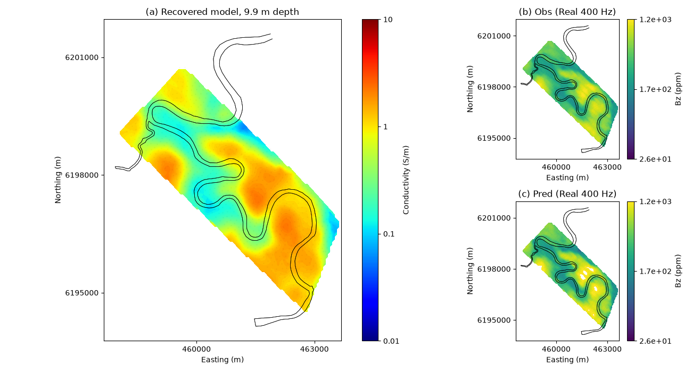

Note
Go to the end to download the full example code.
Heagy et al., 2017 1D RESOLVE Bookpurnong Inversion#
In this example, perform a stitched 1D inversion of the Bookpurnong RESOLVE data. The original data can be downloaded from: https://storage.googleapis.com/simpeg/bookpurnong/bookpurnong.tar.gz
The forward simulation is performed on the cylindrically symmetric mesh using
simpeg.electromagnetics.frequency_domain.
Lindsey J. Heagy, Rowan Cockett, Seogi Kang, Gudni K. Rosenkjaer, Douglas W. Oldenburg, A framework for simulation and inversion in electromagnetics, Computers & Geosciences, Volume 107, 2017, Pages 1-19, ISSN 0098-3004, http://dx.doi.org/10.1016/j.cageo.2017.06.018.
The script and figures are also on figshare: https://doi.org/10.6084/m9.figshare.5107711
This example was updated for SimPEG 0.14.0 on January 31st, 2020 by Joseph Capriotti

Downloading https://storage.googleapis.com/simpeg/bookpurnong/bookpurnong_inversion.tar.gz
saved to: /home/vsts/work/1/s/examples/20-published/bookpurnong_inversion.tar.gz
Download completed!
/home/vsts/work/1/s/examples/20-published/plot_booky_1Dstitched_resolve_inv.py:63: DeprecationWarning: Python 3.14 will, by default, filter extracted tar archives and reject files or modify their metadata. Use the filter argument to control this behavior.
tar.extractall()
/home/vsts/work/1/s/examples/20-published/plot_booky_1Dstitched_resolve_inv.py:307: UserWarning: Adding colorbar to a different Figure <Figure size 640x480 with 1 Axes> than <Figure size 1300x700 with 4 Axes> which fig.colorbar is called on.
cb = plt.colorbar(out, ax=ax0, ticks=np.linspace(-2, 1, 4), format="$10^{%.1f}$")
-1186.8000001566966 223.6000000295225
25.71407326813339 1150.0071756876457
import h5py
import tarfile
import os
import shutil
import numpy as np
import matplotlib.pyplot as plt
from scipy.constants import mu_0
from scipy.spatial import cKDTree
import discretize
from simpeg import (
maps,
utils,
data_misfit,
regularization,
optimization,
inversion,
inverse_problem,
directives,
data,
)
from simpeg.electromagnetics import frequency_domain as FDEM
def download_and_unzip_data(
url="https://storage.googleapis.com/simpeg/bookpurnong/bookpurnong_inversion.tar.gz",
):
"""
Download the data from the storage bucket, unzip the tar file, return
the directory where the data are
"""
# download the data
downloads = utils.download(url)
# directory where the downloaded files are
directory = downloads.split(".")[0]
# unzip the tarfile
tar = tarfile.open(downloads, "r")
tar.extractall()
tar.close()
return downloads, directory
def resolve_1Dinversions(
mesh,
dobs,
src_height,
freqs,
m0,
mref,
mapping,
relative=0.08,
floor=1e-14,
rxOffset=7.86,
):
"""
Perform a single 1D inversion for a RESOLVE sounding for Horizontal
Coplanar Coil data (both real and imaginary).
:param discretize.CylindricalMesh mesh: mesh used for the forward simulation
:param numpy.ndarray dobs: observed data
:param float src_height: height of the source above the ground
:param numpy.ndarray freqs: frequencies
:param numpy.ndarray m0: starting model
:param numpy.ndarray mref: reference model
:param maps.IdentityMap mapping: mapping that maps the model to electrical conductivity
:param float relative: percent error used to construct the data misfit term
:param float floor: noise floor used to construct the data misfit term
:param float rxOffset: offset between source and receiver.
"""
# ------------------- Forward Simulation ------------------- #
# set up the receivers
bzr = FDEM.Rx.PointMagneticFluxDensitySecondary(
np.array([[rxOffset, 0.0, src_height]]), orientation="z", component="real"
)
bzi = FDEM.Rx.PointMagneticFluxDensity(
np.array([[rxOffset, 0.0, src_height]]), orientation="z", component="imag"
)
# source location
srcLoc = np.array([0.0, 0.0, src_height])
source_list = [
FDEM.Src.MagDipole([bzr, bzi], freq, srcLoc, orientation="Z") for freq in freqs
]
# construct a forward simulation
survey = FDEM.Survey(source_list)
prb = FDEM.Simulation3DMagneticFluxDensity(mesh, sigmaMap=mapping)
prb.survey = survey
# ------------------- Inversion ------------------- #
# data misfit term
uncert = abs(dobs) * relative + floor
dat = data.Data(dobs=dobs, standard_deviation=uncert)
dmisfit = data_misfit.L2DataMisfit(simulation=prb, data=dat)
# regularization
regMesh = discretize.TensorMesh([mesh.h[2][mapping.maps[-1].active_cells]])
reg = regularization.WeightedLeastSquares(regMesh)
reg.reference_model = mref
# optimization
opt = optimization.InexactGaussNewton(maxIter=10)
# statement of the inverse problem
invProb = inverse_problem.BaseInvProblem(dmisfit, reg, opt)
# Inversion directives and parameters
target = directives.TargetMisfit()
inv = inversion.BaseInversion(invProb, directiveList=[target])
invProb.beta = 2.0 # Fix beta in the nonlinear iterations
reg.alpha_s = 1e-3
reg.alpha_x = 1.0
prb.counter = opt.counter = utils.Counter()
opt.LSshorten = 0.5
opt.remember("xc")
# run the inversion
mopt = inv.run(m0)
return mopt, invProb.dpred, survey.dobs
def run(runIt=False, plotIt=True, saveIt=False, saveFig=False, cleanup=True):
"""
Run the bookpurnong 1D stitched RESOLVE inversions.
:param bool runIt: re-run the inversions? Default downloads and plots saved results
:param bool plotIt: show the plots?
:param bool saveIt: save the re-inverted results?
:param bool saveFig: save the figure
:param bool cleanup: remove the downloaded results
"""
# download the data
downloads, directory = download_and_unzip_data()
# Load resolve data
resolve = h5py.File(os.path.sep.join([directory, "booky_resolve.hdf5"]), "r")
river_path = resolve["river_path"][()] # River path
nSounding = resolve["data"].shape[0] # the # of soundings
# Bird height from surface
b_height_resolve = resolve["src_elevation"][()]
# fetch the frequencies we are considering
cpi_inds = [0, 2, 6, 8, 10] # Indices for HCP in-phase
cpq_inds = [1, 3, 7, 9, 11] # Indices for HCP quadrature
frequency_cp = resolve["frequency_cp"][()]
# build a mesh
cs, ncx, npad = 1.0, 10.0, 20
hx = [(cs, ncx), (cs, npad, 1.3)]
npad = 12
temp = np.logspace(np.log10(1.0), np.log10(12.0), 19)
temp_pad = temp[-1] * 1.3 ** np.arange(npad)
hz = np.r_[temp_pad[::-1], temp[::-1], temp, temp_pad]
mesh = discretize.CylindricalMesh([hx, 1, hz], "00C")
active = mesh.cell_centers_z < 0.0
# survey parameters
rxOffset = 7.86 # tx-rx separation
bp = -mu_0 / (4 * np.pi * rxOffset**3) # primary magnetic field
# re-run the inversion
if runIt:
# set up the mappings - we are inverting for 1D log conductivity
# below the earth's surface.
actMap = maps.InjectActiveCells(
mesh, active, np.log(1e-8), nC=mesh.shape_cells[2]
)
mapping = maps.ExpMap(mesh) * maps.SurjectVertical1D(mesh) * actMap
# build starting and reference model
sig_half = 1e-1
sig_air = 1e-8
sigma = np.ones(mesh.shape_cells[2]) * sig_air
sigma[active] = sig_half
m0 = np.log(1e-1) * np.ones(active.sum()) # starting model
mref = np.log(1e-1) * np.ones(active.sum()) # reference model
# initalize empty lists for storing inversion results
mopt_re = [] # recovered model
dpred_re = [] # predicted data
dobs_re = [] # observed data
# set up a noise model
# 10% for the 3 lowest frequencies, 15% for the two highest
relative = np.repeat(np.r_[np.ones(3) * 0.1, np.ones(2) * 0.15], 2)
floor = abs(20 * bp * 1e-6) # floor of 20ppm
# loop over the soundings and invert each
for rxind in range(nSounding):
# convert data from ppm to magnetic field (A/m^2)
dobs = (
np.c_[
resolve["data"][rxind, :][cpi_inds].astype(float),
resolve["data"][rxind, :][cpq_inds].astype(float),
].flatten()
* bp
* 1e-6
)
# perform the inversion
src_height = b_height_resolve[rxind].astype(float)
mopt, dpred, dobs = resolve_1Dinversions(
mesh,
dobs,
src_height,
frequency_cp,
m0,
mref,
mapping,
relative=relative,
floor=floor,
)
# add results to our list
mopt_re.append(mopt)
dpred_re.append(dpred)
dobs_re.append(dobs)
# save results
mopt_re = np.vstack(mopt_re)
dpred_re = np.vstack(dpred_re)
dobs_re = np.vstack(dobs_re)
if saveIt:
np.save("mopt_re_final", mopt_re)
np.save("dobs_re_final", dobs_re)
np.save("dpred_re_final", dpred_re)
mopt_re = resolve["mopt"][()]
dobs_re = resolve["dobs"][()]
dpred_re = resolve["dpred"][()]
sigma = np.exp(mopt_re)
indz = -7 # depth index
# so that we can visually compare with literature (eg Viezzoli, 2010)
cmap = "jet"
# dummy figure for colobar
fig = plt.figure()
out = plt.scatter(np.ones(3), np.ones(3), c=np.linspace(-2, 1, 3), cmap=cmap)
plt.close(fig)
# plot from the paper
plt.figure(figsize=(13, 7))
ax0 = plt.subplot2grid((2, 3), (0, 0), rowspan=2, colspan=2)
ax1 = plt.subplot2grid((2, 3), (0, 2))
ax2 = plt.subplot2grid((2, 3), (1, 2))
# titles of plots
title = [
("(a) Recovered model, %.1f m depth") % (-mesh.cell_centers_z[active][indz]),
"(b) Obs (Real 400 Hz)",
"(c) Pred (Real 400 Hz)",
]
temp = sigma[:, indz]
tree = cKDTree(list(zip(resolve["xy"][:, 0], resolve["xy"][:, 1])))
d, d_inds = tree.query(list(zip(resolve["xy"][:, 0], resolve["xy"][:, 1])), k=20)
w = 1.0 / (d + 100.0) ** 2.0
w = utils.sdiag(1.0 / np.sum(w, axis=1)) * (w)
xy = resolve["xy"]
temp = (temp.flatten()[d_inds] * w).sum(axis=1)
utils.plot2Ddata(
xy,
temp,
ncontour=100,
scale="log",
dataloc=False,
contourOpts={"cmap": cmap, "vmin": 1e-2, "vmax": 1e1},
ax=ax0,
)
ax0.plot(resolve["xy"][:, 0], resolve["xy"][:, 1], "k.", alpha=0.02, ms=1)
cb = plt.colorbar(out, ax=ax0, ticks=np.linspace(-2, 1, 4), format="$10^{%.1f}$")
cb.set_ticklabels(["0.01", "0.1", "1", "10"])
cb.set_label("Conductivity (S/m)")
ax0.plot(river_path[:, 0], river_path[:, 1], "k-", lw=0.5)
# plot observed and predicted data
freq_ind = 0
temp_dobs = dobs_re[:, freq_ind].copy()
ax1.plot(river_path[:, 0], river_path[:, 1], "k-", lw=0.5)
inf = temp_dobs / abs(bp) * 1e6
print(inf.min(), inf.max())
out = utils.plot2Ddata(
resolve["xy"][()],
temp_dobs / abs(bp) * 1e6,
ncontour=100,
scale="log",
dataloc=False,
ax=ax1,
contourOpts={"cmap": "viridis"},
)
vmin, vmax = out[0].get_clim()
print(vmin, vmax)
cb = plt.colorbar(
out[0],
ticks=np.logspace(np.log10(vmin), np.log10(vmax), 3),
ax=ax1,
format="%.1e",
fraction=0.046,
pad=0.04,
)
cb.set_label("Bz (ppm)")
temp_dpred = dpred_re[:, freq_ind].copy()
# temp_dpred[mask_:_data] = np.nan
ax2.plot(river_path[:, 0], river_path[:, 1], "k-", lw=0.5)
utils.plot2Ddata(
resolve["xy"][()],
temp_dpred / abs(bp) * 1e6,
ncontour=100,
scale="log",
dataloc=False,
contourOpts={"vmin": vmin, "vmax": vmax, "cmap": "viridis"},
ax=ax2,
)
cb = plt.colorbar(
out[0],
ticks=np.logspace(np.log10(vmin), np.log10(vmax), 3),
ax=ax2,
format="%.1e",
fraction=0.046,
pad=0.04,
)
cb.set_label("Bz (ppm)")
for i, ax in enumerate([ax0, ax1, ax2]):
xticks = [460000, 463000]
yticks = [6195000, 6198000, 6201000]
ax.set_xticks(xticks)
ax.set_yticks(yticks)
ax.plot(river_path[:, 0], river_path[:, 1], "k", lw=0.5)
ax.set_aspect("equal")
ax.plot(resolve["xy"][:, 0], resolve["xy"][:, 1], "k.", alpha=0.02, ms=1)
ax.set_yticklabels([str(f) for f in yticks])
ax.set_ylabel("Northing (m)")
ax.set_xlabel("Easting (m)")
ax.set_title(title[i])
plt.tight_layout()
if plotIt:
plt.show()
if saveFig is True:
fig.savefig("obspred_resolve.png", dpi=200)
resolve.close()
if cleanup:
os.remove(downloads)
shutil.rmtree(directory)
if __name__ == "__main__":
run(runIt=False, plotIt=True, saveIt=True, saveFig=False, cleanup=True)
Total running time of the script: (0 minutes 0.711 seconds)
Estimated memory usage: 329 MB